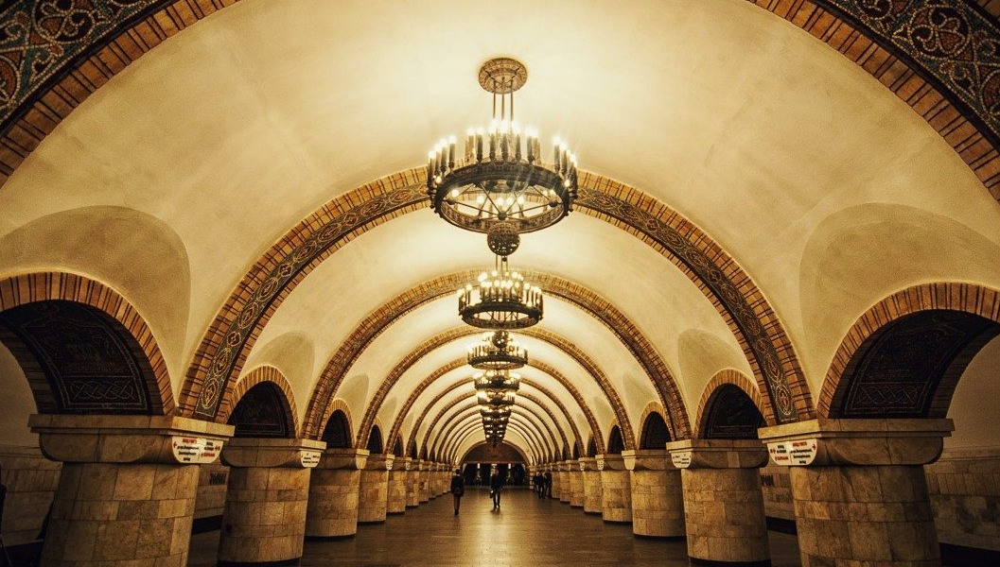
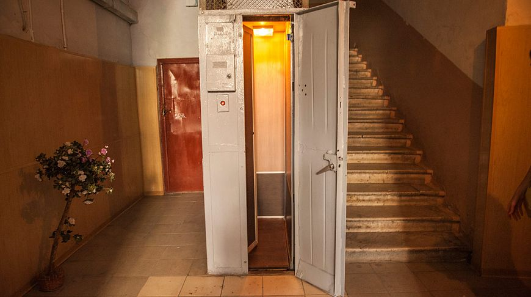
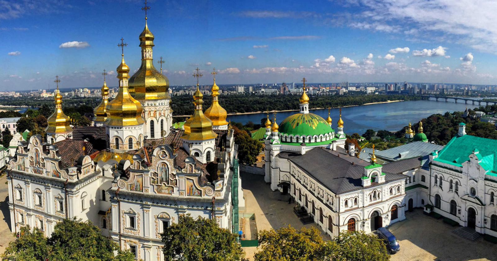

Київ - дивовижне місто, в якому буквально на кожному кроці можна зустріти цікаві місця, і дізнатися багато нового. Пропонуємо вам дізнатися кілька цікавих фактів про столицю України, багато з яких, ми впевнені, вас здивують.
Найдовша протяжність вулиці в столиці належить Броварському проспекту. Його довжина просто феноменальна - цілих 14 кілометрів!
Ну і на противагу попередньому факту - найкоротша вулиця має довжину всього лише якихось 50 метрів, і це - розташований поруч з Арсенальної площею Інженерний провулок. У складі цієї вулички - всього-лише три будинки.
Найбільш давня вулиця столиці - Володимирська, її вік уже перевалив за тисячоліття!
Найширша київська вулиця - це, звичайно ж, Хрещатик. Щоб перейти її від одного будинку до іншого, вам доведеться подолати 75 метрів.
Багато цікавих фактів видізнаєтесь, поїхавши у тур по Україн. тур по Україні.
.png)
Найбільш вузький в місті - Георгіївський провулок, проїжджа частина якого має ширину 5,4 метри.
Найстаріше київське дерево - Дуб Вільгельма Крістера. За приблизними підрахунками, його вік коливається в діапазоні між 600 і 700 роками. Точно сказати важко, адже дізнатися точний вік дерева можна тільки по річним кільцям. Ну а побачити це диво природи можна на вулиці Осиповського.
Найбільше людей живе в Деснянському районі, тут 355 000 мешканців. Ну а найменше людей живе в Печерському районі - всього 139 000. Ну а найбільший житловий масив в місті - це Троєщина, в якій проживають 240 000 чоловік.
Метро Києва - одне з найстаріших в Європі. Найглибша станція в ньому - «Арсенальна». Щоб потрапити на неї, потрібно буде спуститися під землю на глибину 105 метрів! Ну а ну а честь називатися найкрасивішою станцією належить знаменитим «Золотим воротам». Ця станція входить в топ-10 найкрасивіших у всьому світі!

Найвища київська споруда розташована в старовинному районі Сирець. Це побудована ще в 1973 році телевежа, висота якої становить цілих 380 метрів!
Найвища точка столиці, по відношенню до річки Дніпро - це площа слави, розташована на висоті 200 метрів.
Ну а який найбільш популярний сувенір, який найчастіше везуть з Києва? Звичайно ж, це знаменитий київський торт! Ці ласощі почали виробляти ще в далекому 1956 році!
Найменший діючий храм в місті - церква Марії Магдалини. Вона розташована за адресою вулиця Володимирська 43, в маленькому дворику, в підвалі.
Найменший ліфт в Києві вміщує всього лише одну людину, і має площу якихось пів квадратного метра. Подивитися на нього можна на вулиці Прорізній, в 11 будинку. Ліфт був побудований ще в 50-х роках минулого століття на замовлення старого чиновника, якому було дуже важко підніматися вгору по сходах.

Тури по Україні приголомшують своєю загадковістю.
Найширша, і одночасно з цим найкоротша вулиця в усій Європі - це знаменитий Хрещатик. Його ширина становить 75 метрів, а довжина - 1,3 кілометра.
Найвища будівля не тільки в Києві, а й у всій Україні - це житловий комплекс, розташований на Кловському узвозі. Його висота становить цілих 168 метрів.
Найбільш сухий в Києві житловий масив - Харківський, ну а найвологіший, в свою чергу - Виноградар.
Екскурсії по Україні - пізнавай свою Батьківщину з Анга тревел!
Унікальний пам'ятник, аналогів якому немає у всьому світі, і той розташований в столиці. Це пам'ятник сміттєвозу, який був в 2004 році встановлено на знак вдячності за їхню працю всім працівникам санітарної очистки.
Найбільший навчальний заклад Києва - це «Київський політехнічний інститут». На сьогоднішній день в його стінах навчається понад 42 000 студентів, а загальна чисельність колективу - близько 50 000 чоловік!
Найбільш часто відвідуваний музей Києва - це Національний історико-культурний заповідник «Києво-Печерська Лавра». Щороку це місце відвідують більше одного мільйона туристів з усього світу.
